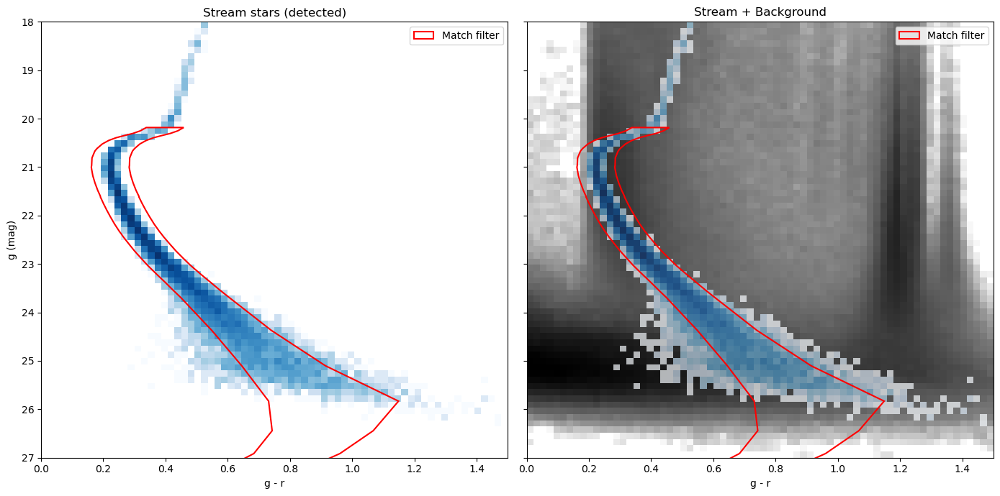
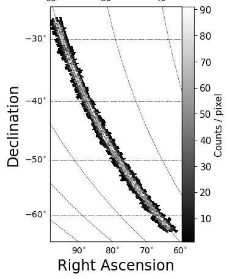
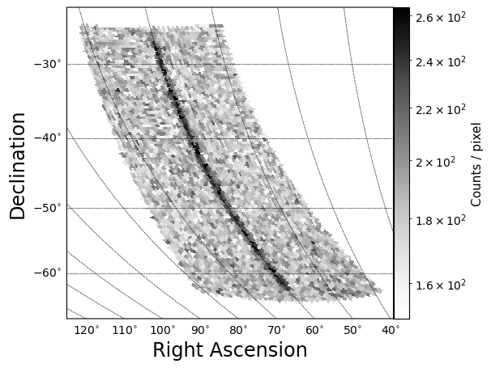

Quickstart: complete stellar stream analysis pipeline#
This notebook walks through the full pipeline in one place:
Stream injection — place a mock stream on realistic survey data
Background generation — generate a realistic field-star and galaxy background
Match filter — select stars whose color–magnitude position is consistent with the stream’s stellar population
CMD visualisation — visualise color magnitude distribution of stream and background objects
2-D sky maps — visualise the stream and show the depth variation across the field
Companion tutorials
Full injection walkthrough:
tutorial_inject_stream.ipynbIsochrone / data-mock generation:
tutorial_generate_datamocks.ipynb
Imports#
%load_ext autoreload
%autoreload 2
import numpy as np
import pandas as pd
import matplotlib.pyplot as plt
import matplotlib.patches as mpatches
from matplotlib.colors import LogNorm
from matplotlib.path import Path
import astropy.coordinates as coord
import astropy.units as u
import gala.coordinates as gc
from streamobs.surveys import Survey
from streamobs.model import StreamModel
from streamobs.observed import StreamInjector
from streamobs.background import Background
from streamobs.match_filter import build_match_filter, is_in_match_filter
from streamobs.plotting import plot_healpix_counts
Step 1 — Survey and great-circle frame#
We load the LSST yr1 survey and define a great-circle frame that spans
Dec = -30° → -60° at RA = 60°. This object is then used to find (ra,dec)
coordinates for the stream and the background.
survey = Survey.load("lsst", release="yr1")
end1 = coord.SkyCoord(ra=60.0 * u.deg, dec=-30.0 * u.deg, frame="icrs")
end2 = coord.SkyCoord(ra=60.0 * u.deg, dec=-60.0 * u.deg, frame="icrs")
gc_frame = gc.GreatCircleICRSFrame.from_endpoints(end1, end2)
Loading survey data for 'lsst_yr1'...
Loading config from: lsst_yr1.yaml
======================================================================
LOADING SURVEY DATA FILES
======================================================================
Survey data directory: /sps/lsst/users/mpelissi/packages/streamobs/streamobs/../data/surveys/lsst_yr1
Fallback directory for shared data files: /sps/lsst/users/mpelissi/packages/streamobs/streamobs/../data/others
Available bands: g, i, r, u, y, z
Loading survey properties...
Loading magnitude limit maps...
✓ Success for g-band magnitude limit
⚠ Warning: 'maglim_map_i' not specified in config (skipping i-band)
✓ Success for r-band magnitude limit
⚠ Warning: 'maglim_map_u' not specified in config (skipping u-band)
⚠ Warning: 'maglim_map_y' not specified in config (skipping y-band)
⚠ Warning: 'maglim_map_z' not specified in config (skipping z-band)
Loading completeness/efficiency function...
Loading Completeness/efficiency function...
File: lsst_stellar_efficiency_cutr.csv
✓ Success
Loading Detection efficiency function...
File: lsst_stellar_efficiency_cutr.csv
✓ Success
Loading Classification efficiency function...
File: lsst_stellar_efficiency_cutr.csv
✓ Success
Loading Galaxy misclassification efficiency...
File: lsst_stellar_efficiency_cutr.csv
✓ Success
Loading Galaxy misclassification × detection efficiency...
File: lsst_stellar_efficiency_cutr.csv
✗ Failed to load gal_misclassification_detection: no field of name missclassification_detection_eff
Loading photometric error model...
Loading Photometric error model (catalog / reported)...
File: lsst_photoerror_r.csv
✓ Success
Loading band-independent maps...
Loading E(B-V) extinction map...
File: ebv_sfd98_lowres_nside_512_ring_equatorial.fits
✓ Success
⚠ Warning: 'coverage' not specified in config (skipping)
Building coverage map from magnitude limit maps...
✓ Built coverage map (nside=128, 132437 pixels covered)
Survey properties summary:
g-band:
Extinction coefficient: 3.661
Saturation limit: 16.0 mag
Systematic error: 0.0050 mag
i-band:
Extinction coefficient: 2.054
Saturation limit: 16.0 mag
Systematic error: 0.0050 mag
r-band:
Extinction coefficient: 2.701
Saturation limit: 16.0 mag
Systematic error: 0.0050 mag
u-band:
Extinction coefficient: 4.757
Saturation limit: 16.0 mag
Systematic error: 0.0050 mag
y-band:
Extinction coefficient: 1.308
Saturation limit: 16.0 mag
Systematic error: 0.0050 mag
z-band:
Extinction coefficient: 1.590
Saturation limit: 16.0 mag
Systematic error: 0.0050 mag
======================================================================
SURVEY DATA LOADED SUCCESSFULLY
======================================================================
✓ Survey 'lsst_yr1' loaded and cached successfully
Step 2 — Inject a stream#
We create a simple mock stream using StreamModel and inject it into
the LSST yr1 survey at the great-circle frame defined above.
Tip: replace
stream_rawbelow with your own simulation output (anypd.DataFramewithphi1,phi2columns, and optionallylsst_g_true/lsst_r_trueif you already have magnitudes). Seetutorial_inject_stream.ipynbfor a detailed description of all injection options.
stream_config = {
"density": {"type": "Uniform", "xmin": -18.0, "xmax": 18.0},
"track": {
"center": {"type": "Constant", "value": 0.0},
"spread": {"type": "Constant", "value": 0.3},
"sampler": "Gaussian",
},
"isochrone": {
"name": "Marigo2017",
"survey": "lsst",
"age": 12.0, # Gyr
"z": 0.0006, # metallicity
"band_1": "g",
"band_2": "r",
"band_1_detection": True,
},
"distance_modulus": {
"center": {"type": "Constant", "value": 16.8},
"spread": {"type": "Constant", "value": 0.0},
},
}
# Generate the stream model
model = StreamModel(stream_config)
stream_raw = model.sample(100000, seed=42)
# Inject the stream into the survey
injector = StreamInjector(survey=survey)
stream = injector.inject(
stream_raw, gc_frame=gc_frame, seed=42, perfect_galstarsep=True
)
# Select only the stars that are observed in the survey
stream_detected = stream[stream["lsst_yr1_flag_observed"]].copy()
print(f"Detected stream stars: {len(stream_detected)} / {len(stream)}")
/sps/lsst/users/mpelissi/envs/env_miniconda_py13/lib/python3.13/site-packages/pandas/core/arraylike.py:399: RuntimeWarning: invalid value encountered in log10
result = getattr(ufunc, method)(*inputs, **kwargs)
Applying dust correction for r-band on observed magnitudes.
Applying dust correction for g-band on observed magnitudes.
Applying detection cut on g-band with SNR >= 5.0
Detected stream stars: 10499 / 100000
/sps/lsst/users/mpelissi/envs/env_miniconda_py13/lib/python3.13/site-packages/pandas/core/arraylike.py:399: RuntimeWarning: invalid value encountered in log10
result = getattr(ufunc, method)(*inputs, **kwargs)
Step 3 — Generate background#
The Background class with method='light' samples from precomputed
CMD grids, so it is fast even for large fields. It reads the local
magnitude limit at each sky position and draws the appropriate number
of stars and galaxies. It includes survey selection effects, errors, and
fluctuations due to survey depth variation. This light version needs ressources
that are automatically downloaded when installing the package
python bin/download_data.py
You can also decide to inject your own background model instead of using the light method (see full documentation).
# Generate both stars and galaxies in the background catalog, using the light method
bg_gen = Background(survey, source_type="both", method="light")
# generate the background catalog in the same region of the sky as the stream
# The output catalog contains observed background objects
bg_catalog, bg_meta = bg_gen.generate(
phi1_limits=(-20, 20), phi2_limits=(-10, 10), gc_frame=gc_frame, seed=42
)
print(f"Background objects: {len(bg_catalog)}")
print(f"Columns: {list(bg_catalog.columns)}")
/sps/lsst/users/mpelissi/packages/streamobs/streamobs/background/background.py:158: UserWarning: Requested nside=4096 exceeds the magnitude-limit map resolution (nside=128). Capping to nside=128.
return gen.generate(
Background objects: 12497466
Columns: ['ra', 'dec', 'phi1', 'phi2', 'lsst_yr1_r_obs', 'lsst_yr1_g_obs', 'source_type']
Step 4 — Apply the match filter#
The match filter selects stars whose (g−r, g) position is consistent with the stream’s isochrone at the given distance, accounting for photometric errors and a small distance spread.
DISTANCE_MODULUS = stream_config["distance_modulus"]["center"]["value"]
AGE = stream_config["isochrone"]["age"]
METALLICITY = stream_config["isochrone"]["z"]
# Creating match filter shape in color-magnitude space
polygon_vertices = build_match_filter(
distance_modulus=DISTANCE_MODULUS,
age=AGE,
metallicity=METALLICITY,
survey="lsst",
)
# Selecting stars in the stream and background catalogs that are inside the match filter polygon
stream_in_mf = is_in_match_filter(
stream_detected["lsst_yr1_g_obs"],
stream_detected["lsst_yr1_r_obs"],
polygon_vertices=polygon_vertices,
)
print(
f"Stream selected by match filter: {stream_in_mf.sum()} / {len(stream_detected)} "
f"({stream_in_mf.mean()*100:.1f}%)"
)
bg_in_mf = is_in_match_filter(
bg_catalog["lsst_yr1_g_obs"],
bg_catalog["lsst_yr1_r_obs"],
polygon_vertices=polygon_vertices,
)
print(
f"Background selected: {bg_in_mf.sum()} / {len(bg_catalog)} "
f"({bg_in_mf.mean()*100:.1f}%)"
)
Stream selected by match filter: 9364 / 10499 (89.2%)
Background selected: 1187213 / 12497466 (9.5%)
# Combine the stream and background catalogs into a single DataFrame
combined = pd.concat(
[
stream_detected[stream_in_mf],
bg_catalog[bg_in_mf],
],
ignore_index=True,
)
Step 5 — Color–magnitude diagrams#
Left: the injected stream stars (detected) with the match filter polygon. Right: stream + background together, to show how the filter isolates the stream’s stellar locus from the bulk of the background.
COLOR_RANGE = (-0, 1.5)
MAG_RANGE = (18, 27)
N_BINS = 70
g_str = stream_detected["lsst_yr1_g_obs"]
r_str = stream_detected["lsst_yr1_r_obs"]
g_bg = bg_catalog["lsst_yr1_g_obs"]
r_bg = bg_catalog["lsst_yr1_r_obs"]
mf_patch_kw = dict(
facecolor="none", edgecolor="red", linewidth=1.5, label="Match filter"
)
fig, axes = plt.subplots(1, 2, figsize=(14, 7), sharey=True)
# --- Left: stream only ---
axes[0].hist2d(
g_str - r_str,
g_str,
bins=N_BINS,
range=[COLOR_RANGE, MAG_RANGE],
norm=LogNorm(),
cmap="Blues",
)
axes[0].add_patch(mpatches.PathPatch(Path(polygon_vertices), **mf_patch_kw))
axes[0].set_xlim(*COLOR_RANGE)
axes[0].set_ylim(MAG_RANGE[1], MAG_RANGE[0])
axes[0].set_xlabel("g - r")
axes[0].set_ylabel("g (mag)")
axes[0].set_title("Stream stars (detected)")
axes[0].legend()
# --- Right: stream + background ---
axes[1].hist2d(
g_bg - r_bg,
g_bg,
bins=N_BINS,
range=[COLOR_RANGE, MAG_RANGE],
norm=LogNorm(),
cmap="Greys",
)
axes[1].hist2d(
g_str - r_str,
g_str,
bins=N_BINS,
range=[COLOR_RANGE, MAG_RANGE],
norm=LogNorm(),
cmap="Blues",
alpha=0.7,
)
axes[1].add_patch(mpatches.PathPatch(Path(polygon_vertices), **mf_patch_kw))
axes[1].set_xlim(*COLOR_RANGE)
axes[1].set_xlabel("g - r")
axes[1].set_title("Stream + Background")
axes[1].legend()
for a in axes:
a.set_ylim(MAG_RANGE[1], MAG_RANGE[0]) # Invert y axis
plt.tight_layout()
plt.show()

Step 6 — 2-D sky maps#
The stream is placed along the great-circle frame defined in Step 1. The
background star counts per HEALPix pixel reflect the actual LSST depth at
each sky position — note how the density changes along the Dec gradient,
which runs from +20° (phi1 ≈ −20°) to −20° (phi1 ≈ +20°) in this frame.
This spatial depth variation is automatically taken into account by the
background generator.
plot_healpix_counts(
stream_detected["ra"],
stream_detected["dec"],
nside=128,
title="Stream stars (detected)",
cmap="grey",
)
plt.show()

gals_cut = (
combined["lsst_yr1_g_obs"] < 25.0
) # Remove some galaxies and inhomogeneities imprinted by the survey depth variations
plot_healpix_counts(
combined[gals_cut]["ra"],
combined[gals_cut]["dec"],
nside=128,
title="Stream + Background (after match filter)",
vmin=150,
vmax=None,
cmap="Greys",
norm="log",
)
plt.show()

Conclusion#
In a few commands we went from a mock stellar stream to a realistic observational picture: realistic survey selection, variable survey depth, realistic photometric noise, and a match filter that boosts the stream signal relative to the background. This pipeline can then easily be used to train stream detection algorithms and more realistic stream analyses on injected simulations.
You can find more information in the full documentation.